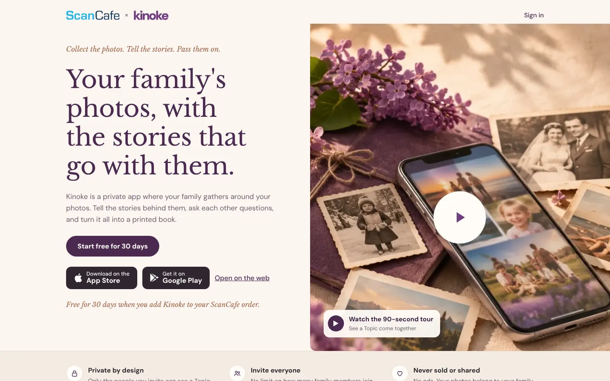
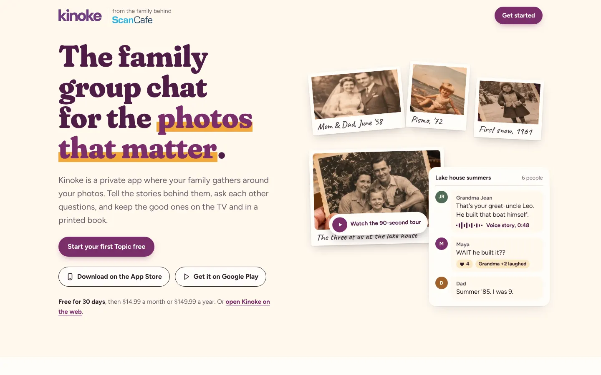
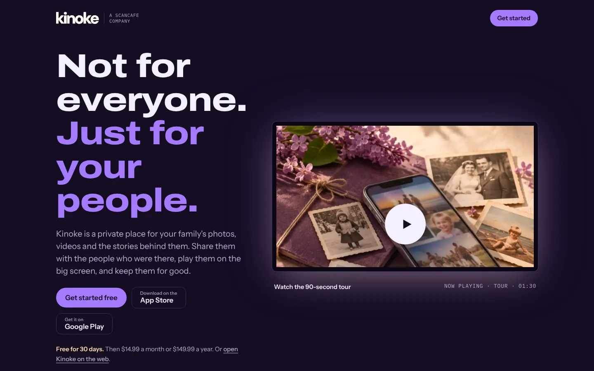

<title>Kinoke Landing Variants</title>
<meta name="claude:viewport-fit-sides" content="cover">
<link rel="preconnect" href="https://fonts.googleapis.com">
<link rel="preconnect" href="https://fonts.gstatic.com" crossorigin>
<link rel="stylesheet" href="https://fonts.googleapis.com/css2?family=Inter:wght@400;500;600;700&family=Newsreader:opsz,wght@6..72,500;6..72,600&display=swap">
<style>
/* Layout: one reading column for the brief, a three-up comparison band for the variants, stacked on phones. */
:root {
  --bg: #FAF8F5;
  --surface: #FFFFFF;
  --fg: #22202A;
  --fg-soft: #625D6E;
  --line: #E4DFE8;
  --accent: #6A3A7A;
  --accent-soft: #F1EAF4;
  --warn: #8A5A12;
  --warn-soft: #FBF1DE;
  --v1: #4A2A4F;
  --v2: #C9832A;
  --v3: #6D4BD1;
  --font-display: "Newsreader", Georgia, "Times New Roman", serif;
  --font-body: "Inter", system-ui, -apple-system, "Segoe UI", sans-serif;
  --radius: 10px;
}
@media (prefers-color-scheme: dark) {
  :root:not([data-theme="light"]) {
    --bg: #17151C; --surface: #201D27; --fg: #EEEAF3; --fg-soft: #ABA4B8; --line: #35303F;
    --accent: #C9A6DA; --accent-soft: #2C2434; --warn: #E8BE73; --warn-soft: #2E2618;
    --v1: #C9A6DA; --v2: #F0B25E; --v3: #A88BFF; color-scheme: dark;
  }
}
:root[data-theme="dark"] {
  --bg: #17151C; --surface: #201D27; --fg: #EEEAF3; --fg-soft: #ABA4B8; --line: #35303F;
  --accent: #C9A6DA; --accent-soft: #2C2434; --warn: #E8BE73; --warn-soft: #2E2618;
  --v1: #C9A6DA; --v2: #F0B25E; --v3: #A88BFF; color-scheme: dark;
}
* { box-sizing: border-box; }
body { background: var(--bg); color: var(--fg); font: 400 16px/1.6 var(--font-body); }
.wrap { max-width: 1120px; margin: 0 auto; padding-left: max(16px, env(safe-area-inset-left, 0px)); padding-right: max(16px, env(safe-area-inset-right, 0px)); }
.narrow { max-width: 68ch; }
header.top { padding-block: 3.5rem 2rem; border-bottom: 1px solid var(--line); }
h1, h2, h3 { font-family: var(--font-display); font-weight: 600; text-wrap: balance; line-height: 1.15; margin: 0; }
h1 { font-size: clamp(2rem, 5vw, 3rem); }
h2 { font-size: clamp(1.5rem, 3vw, 2rem); }
h3 { font-size: 1.35rem; }
p { margin: 0; }
.lede { font-size: 1.125rem; color: var(--fg-soft); margin-top: 1rem; }
.meta { display: flex; flex-wrap: wrap; gap: .5rem 1.25rem; margin-top: 1.25rem; font-size: .875rem; color: var(--fg-soft); }
.meta strong { color: var(--fg); font-weight: 600; }
section { padding-block: 3rem; border-bottom: 1px solid var(--line); }
section > .wrap > * + * { margin-top: 1rem; }
.note { background: var(--warn-soft); color: var(--fg); border-radius: var(--radius); padding: 1rem 1.25rem; font-size: .95rem; }
.note strong { color: var(--warn); }

/* variant cards */
.variants { display: grid; grid-template-columns: 1fr; gap: 1.25rem; margin-top: 1.5rem; }
@media (min-width: 900px) { .variants { grid-template-columns: repeat(3, 1fr); } }
.v { background: var(--surface); border: 1px solid var(--line); border-radius: var(--radius); overflow: hidden; display: flex; flex-direction: column; min-width: 0; }
.v .thumb { display: block; aspect-ratio: 16 / 10; background: var(--accent-soft); border-bottom: 1px solid var(--line); overflow: hidden; }
.v .thumb img { width: 100%; height: 100%; object-fit: cover; object-position: top; display: block; }
.v .body { padding: 1.25rem; display: flex; flex-direction: column; gap: .9rem; flex: 1; }
.v .tag { font-size: .8rem; font-weight: 600; letter-spacing: .04em; color: var(--swatch); }
.v .hyp { font-size: .95rem; }
.v dl { display: grid; grid-template-columns: 6.5rem 1fr; gap: .35rem .75rem; margin: 0; font-size: .875rem; }
.v dt { color: var(--fg-soft); }
.v dd { margin: 0; min-width: 0; }
.v .links { display: flex; flex-wrap: wrap; gap: .5rem; margin-top: auto; padding-top: .5rem; }
.btn { display: inline-flex; align-items: center; min-height: 44px; padding: .55rem 1rem; border-radius: 8px; font-weight: 600; font-size: .9rem; text-decoration: none; border: 1px solid var(--line); color: var(--fg); background: var(--surface); }
.btn.primary { background: var(--swatch); border-color: var(--swatch); color: var(--bg); }
.btn:focus-visible, a:focus-visible { outline: 3px solid var(--accent); outline-offset: 2px; }
.v1 { --swatch: var(--v1); } .v2 { --swatch: var(--v2); } .v3 { --swatch: var(--v3); }

/* comparison table */
.table-wrap { overflow-x: auto; border: 1px solid var(--line); border-radius: var(--radius); background: var(--surface); }
table { border-collapse: collapse; width: 100%; min-width: 640px; font-size: .9rem; }
th, td { text-align: left; vertical-align: top; padding: .75rem 1rem; border-bottom: 1px solid var(--line); }
thead th { font-weight: 600; background: var(--accent-soft); }
tbody th { font-weight: 600; color: var(--fg-soft); white-space: nowrap; }
tr:last-child td, tr:last-child th { border-bottom: 0; }

/* lists */
.list { display: grid; gap: .9rem; padding: 0; margin: 1.25rem 0 0; list-style: none; }
.list li { display: grid; grid-template-columns: 1.75rem 1fr; gap: .5rem; }
.list .n { font-weight: 700; color: var(--accent); font-variant-numeric: tabular-nums; }
.list b { font-weight: 600; }
.cols { display: grid; gap: 2rem; grid-template-columns: 1fr; }
@media (min-width: 860px) { .cols { grid-template-columns: 1fr 1fr; } }
.q { background: var(--surface); border: 1px solid var(--line); border-radius: var(--radius); padding: 1rem 1.25rem; }
.q h3 { font-family: var(--font-body); font-size: 1rem; font-weight: 600; }
.q p { color: var(--fg-soft); font-size: .925rem; margin-top: .35rem; }
.q .who { font-size: .8rem; font-weight: 600; color: var(--accent); margin-top: .5rem; }
.qs { display: grid; gap: .75rem; grid-template-columns: 1fr; margin-top: 1.25rem; }
@media (min-width: 760px) { .qs { grid-template-columns: 1fr 1fr; } }
code { font-size: .875em; background: var(--accent-soft); padding: .1em .35em; border-radius: 4px; overflow-wrap: anywhere; }
footer { padding-block: 2rem 3rem; font-size: .875rem; color: var(--fg-soft); }
</style>

<header class="top">
  <div class="wrap">
    <h1>Kinoke landing page variants</h1>
    <p class="lede narrow">Three test directions for the new ScanCafe and Kinoke landing page, built from Dave's v1 PDF and the Nov 24 call with Anderson and Mitch. Each one takes a different position on type, color and how the two brands sit together, so you can react to the full range instead of describing it.</p>
    <div class="meta">
      <span><strong>Status:</strong> clickable mockups for review</span>
      <span><strong>Destination:</strong> app.kinoke.com/landing-page-1, -2, -3</span>
      <span><strong>Prepared:</strong> Nov 24, 2026</span>
    </div>
  </div>
</header>

<section>
  <div class="wrap">
    <h2>The three directions</h2>
    <p class="narrow">Anderson named two dials on the call: typography (grown-up or playful) and color (warm and ScanCafe-adjacent, or a new shared purple system). These variants sit at three different points on those dials, plus a third question: how ScanCafe and Kinoke appear together.</p>
    <div class="variants">
      <article class="v v1">
        <a class="thumb" href="landing-page-1.html"></a>
        <div class="body">
          <span class="tag">Variant 1 · Control</span>
          <h3>Heirloom</h3>
          <p class="hyp">A grown-up, nostalgic page converts ScanCafe customers best. This is Dave's v1 with its problems fixed, so it works as the baseline.</p>
          <dl>
            <dt>Reader</dt><dd>ScanCafe customer, 50 to 75</dd>
            <dt>Type</dt><dd>Classic serif with a clean sans</dd>
            <dt>Color</dt><dd>Plum on cream</dd>
            <dt>Co-brand</dt><dd>ScanCafe × Kinoke lockup</dd>
            <dt>Headline</dt><dd>Your family's photos, with the stories that go with them.</dd>
          </dl>
          <div class="links">
            <a class="btn primary" href="landing-page-1.html">Open page</a>
            <a class="btn" href="previews/landing-page-1-mobile.png">Phone view</a>
          </div>
        </div>
      </article>
      <article class="v v2">
        <a class="thumb" href="landing-page-2.html"></a>
        <div class="body">
          <span class="tag">Variant 2 · Anderson's hybrid</span>
          <h3>Kitchen Table</h3>
          <p class="hyp">Warm colors with a playful typeface keep the fun without looking childish, so the same page works for Anderson's mom and his college-age nieces and nephews.</p>
          <dl>
            <dt>Reader</dt><dd>Young parents and their parents</dd>
            <dt>Type</dt><dd>Soft, chunky serif (ScanCafe's heading font, loosened up) with handwritten photo captions</dd>
            <dt>Color</dt><dd>Berry, marigold, apricot</dd>
            <dt>Co-brand</dt><dd>"From the family behind ScanCafe"</dd>
            <dt>Headline</dt><dd>The family group chat for the photos that matter.</dd>
          </dl>
          <div class="links">
            <a class="btn primary" href="landing-page-2.html">Open page</a>
            <a class="btn" href="previews/landing-page-2-mobile.png">Phone view</a>
          </div>
        </div>
      </article>
      <article class="v v3">
        <a class="thumb" href="landing-page-3.html"></a>
        <div class="body">
          <span class="tag">Variant 3 · Rebrand thought experiment</span>
          <h3>Movie Night</h3>
          <p class="hyp">One purple brand family (deep for ScanCafe, bright for Kinoke) makes the hand-off feel seamless and gives Kinoke room to grow beyond scanning.</p>
          <dl>
            <dt>Reader</dt><dd>20 to 40, the wider market</dd>
            <dt>Type</dt><dd>Wide, confident sans with slide-label details</dd>
            <dt>Color</dt><dd>Dark aubergine with bright violet</dd>
            <dt>Co-brand</dt><dd>"A ScanCafe company", with a concept purple ScanCafe logo</dd>
            <dt>Headline</dt><dd>Not for everyone. Just for your people.</dd>
          </dl>
          <div class="links">
            <a class="btn primary" href="landing-page-3.html">Open page</a>
            <a class="btn" href="previews/landing-page-3-mobile.png">Phone view</a>
          </div>
        </div>
      </article>
    </div>
  </div>
</section>

<section>
  <div class="wrap">
    <h2>Side by side</h2>
    <div class="table-wrap">
      <table>
        <thead><tr><th scope="col"></th><th scope="col">1 · Heirloom</th><th scope="col">2 · Kitchen Table</th><th scope="col">3 · Movie Night</th></tr></thead>
        <tbody>
          <tr><th scope="row">Lead feature</th><td>Stories behind old photos, printed books</td><td>Family conversation on photos, TV slideshow at the holidays</td><td>TV slideshow, short videos set to music, privacy</td></tr>
          <tr><th scope="row">Mood</th><td>Calm, unhurried</td><td>Warm, a little funny</td><td>Confident, a bit cheeky</td></tr>
          <tr><th scope="row">Risk</th><td>Reads as "for old people," which is the worry Mitch raised</td><td>Playful type can tip into cute if overdone</td><td>Biggest departure, and the purple ScanCafe logo would ripple into packaging and ads</td></tr>
          <tr><th scope="row">If it wins</th><td>Keep the ScanCafe page grown-up and leave kinoke.com playful</td><td>A single middle-ground brand for both sites</td><td>Open the full ScanCafe rebrand conversation in Colorado</td></tr>
        </tbody>
      </table>
    </div>
  </div>
</section>

<section>
  <div class="wrap">
    <div class="cols">
      <div>
        <h2>What changed from the v1 PDF</h2>
        <p class="narrow" style="margin-top:1rem">Variant 1 keeps the v1 look on purpose. These are the problems it fixes, and all three variants share the fixes.</p>
        <ol class="list">
          <li><span class="n">1</span><span><b>One primary button.</b> The v1 hero had three equal purple buttons, so nothing stood out. Each variant now has one main "Get started" action, with the app stores as secondary.</span></li>
          <li><span class="n">2</span><span><b>Missing features added.</b> v1 covered Topics, stories, tagging and books. The new tour video also covers questions, videos set to music, suggested people tags, Discover and the TV slideshow. Those are on every page now.</span></li>
          <li><span class="n">3</span><span><b>Broken image fixed.</b> The step 3 card image in v1 is half black.</span></li>
          <li><span class="n">4</span><span><b>App screenshots removed.</b> The v1 Topics panel showed the current bright purple-and-pink app screen, which clashes with the plum page. The variants use simple drawings of the app in each page's own colors. If one direction wins, the app's look should eventually follow it, or the jump from page to app will feel like a different product.</span></li>
          <li><span class="n">5</span><span><b>Fewer all-caps labels.</b> The small spaced-out labels above every heading ("HOW IT WORKS") are a common template look. They're mostly gone.</span></li>
          <li><span class="n">6</span><span><b>Trial wording kept in one place.</b> The "free for 30 days" sentence sits in a single spot on each page, so it's a one-line change if the trial moves to start when scans arrive.</span></li>
        </ol>
      </div>
      <div>
        <h2>How to read the test</h2>
        <ol class="list">
          <li><span class="n">1</span><span><b>Every button carries its variant.</b> Sign-up links go to <code>/login?from=landing-page-N</code>, so sign-ups can be counted per page.</span></li>
          <li><span class="n">2</span><span><b>A winner tells you the direction, not the reason.</b> The pages differ in everything at once. Once a direction wins, test one element at a time (headline, hero image, co-brand line) to learn what actually moved people.</span></li>
          <li><span class="n">3</span><span><b>Traffic decides how much you can trust the numbers.</b> As a rough rule you want a few hundred visitors per page, and enough sign-ups on each, before calling a winner. Until paid traffic runs, treat this as a review tool: Anderson, Mitch and a handful of real customers (one older, one college-age) click through and react.</span></li>
          <li><span class="n">4</span><span><b>Hidden from Google.</b> Every page is set to "noindex" so search engines don't list duplicates of kinoke.com.</span></li>
        </ol>
      </div>
    </div>
  </div>
</section>

<section>
  <div class="wrap">
    <h2>Open questions before any of these go live</h2>
    <div class="qs">
      <div class="q"><h3>When does the free trial start?</h3><p>At order, when scans arrive, or 60 days? Every page's trial line depends on it. Dave's numbers put the median order turnaround at 41 to 44 days, so many customers currently pay before they see anything.</p><p class="who">Anderson</p></div>
      <div class="q"><h3>How does photo tagging handle privacy?</h3><p>This FAQ answer is still a placeholder on every page. Face suggestions are a trust question people will ask.</p><p class="who">Mitch</p></div>
      <div class="q"><h3>How do I cancel, and what happens to my photos?</h3><p>Still a placeholder. It's the second most important trust answer after "who can see my photos".</p><p class="who">Mitch</p></div>
      <div class="q"><h3>What do printed books cost?</h3><p>v1 had "from [$29, confirm]". The pages say "sold separately" until there's a number.</p><p class="who">Mitch</p></div>
      <div class="q"><h3>Logo files</h3><p>The logos here were cut from the PDF screenshot and are low resolution. Production needs the original vector files.</p><p class="who">Dave</p></div>
      <div class="q"><h3>Modern family photos and video</h3><p>All the photography here is vintage prints, which pulls every page toward "nostalgic". Variants 2 and 3 have labeled slots for contemporary shots. Mitch's video of Riley watching the TV slideshow would be ideal if he's comfortable using it.</p><p class="who">Mitch, Dave</p></div>
    </div>
  </div>
</section>

<footer>
  <div class="wrap">
    <p class="narrow">These are static mockups. Once the kinoke-frontend repository is connected, each page gets ported into the Next.js app at <code>apps/web/app/landing-page-N/page.tsx</code> following Mitch's build rules: public pages, their own fonts and colors, and nothing outside the landing pages touched.</p>
  </div>
</footer>
